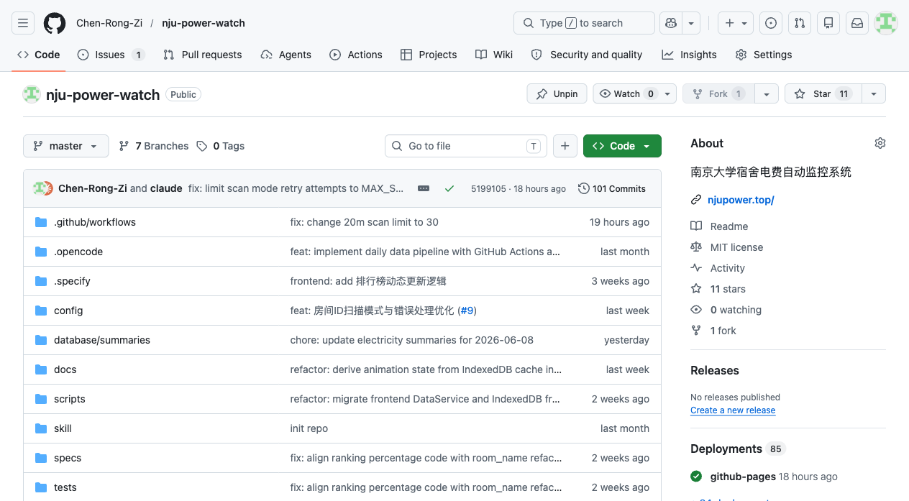
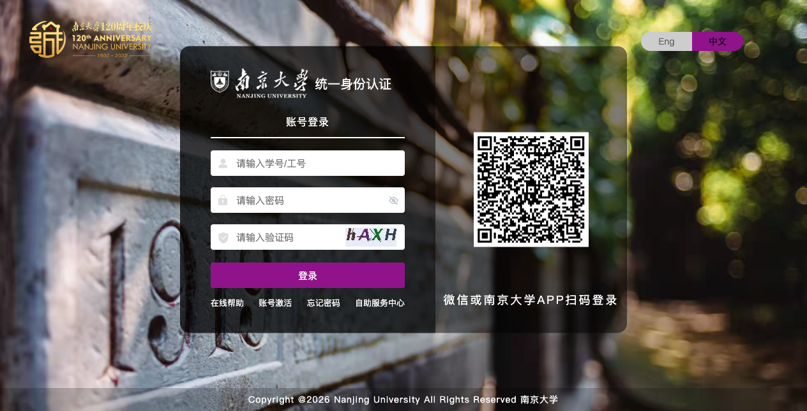
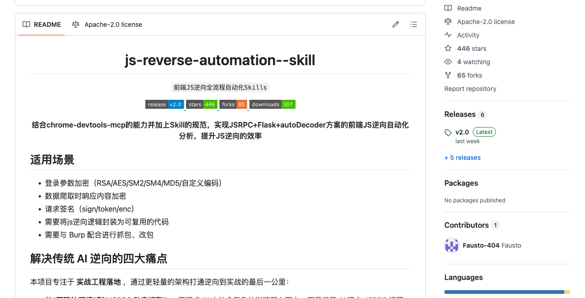
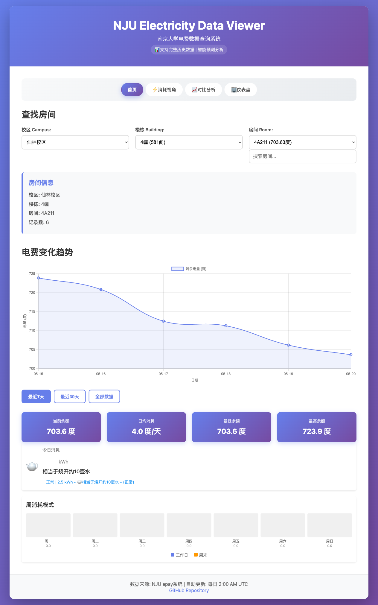
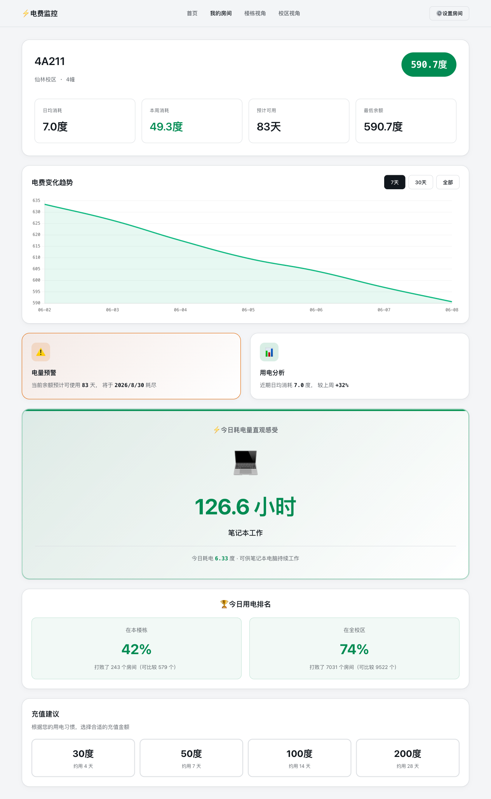
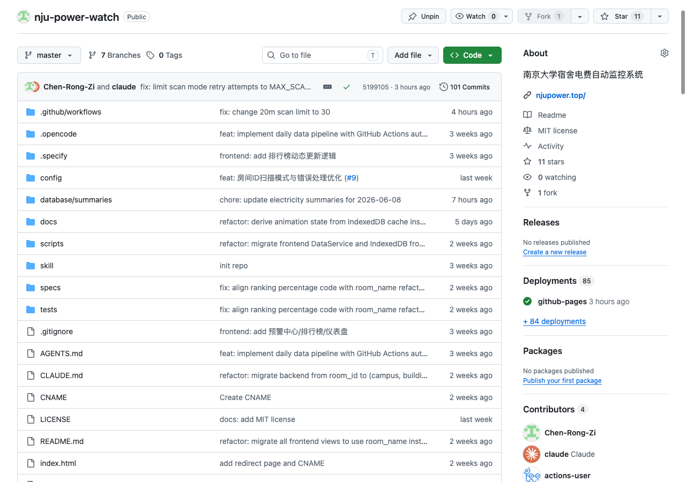

一段 AI4SE 工具链的实践记录与反思
Open Source · NJU Dorm Electricity Monitor
南大宿舍电费自动监控系统 — 让你的每一度电都看得见
github.com/Chen-Rong-Zi/nju-power-watch
😫 痛点
✅ 解决方案

🏠 个人视角 · 日常查看
🏢 楼栋视角 · 社交对比
🏫 校区视角 · 宏观洞察
趣味亮点 · 电量直观类比
1度 ≈ iPhone充74次 / 洗衣2桶 / 电动车骑50km
Target · 逆向目标

Skill · js-reverse-automation

Applied · NJU 实战映射
识别 lt、execution、_eventId 等表单参数
捕获 pwdEncryptSalt → AES-CBC 加密
getCaptcha.htl 接口 → 云码 API 自动识别
登录页 → AES 加密 → 提交 → Cookie → 跳转电费系统
Flask 代理nju_electric_query.py — aiohttp + asyncio 并发
def encrypt_password(pwd, salt):
raw = random_hex(64) + pwd
cipher = AES.new(salt.encode(),
AES.MODE_CBC, iv=salt[:16].encode())
return b64encode(
cipher.encrypt(pad(raw))).decode()传统 AI 逆向只输出"分析思路"，而 js-reverse-automation skill 通过 Chrome DevTools MCP 连接真实浏览器、Runtime Hook 探针 捕获加密调用栈、7 维度评分系统 验证候选函数，最终交付可运行的 JSRPC + Flask 代理 + autoDecoder。Agent 完成了从"不知道有什么 API"到"可运行的查询脚本"的全链路交付——需人类指导方向，Agent 执行细节。
Config · 工作流配置
name: Daily Electricity Query
on:
schedule:
- cron: '0 2 * * *' # 每日 UTC 2:00
workflow_dispatch:
jobs:
query-electricity:
runs-on: ubuntu-latest
timeout-minutes: 35
steps:
- run: python scripts/nju_auto_login.py
- run: python nju_electric_query.py \
-d ./database -c 200 \
${{ steps.rooms.outputs.room_ids }}
- run: python scripts/aggregate_data.py \
--database ./database \
--output ./database/summaries
- run: git add -f database/summaries/ \
&& git commit -m "update $(date +%F)" \
&& git pushPipeline · 数据采集流水线
Model · 两层数据存储结构
├── 仙林校区/ │ ├── 19幢/ → 19栋第16层1613/ → 20260515.json │ └── 4幢/ → 4A505/ → 20260515.json ├── 苏州校区/ → 仁园-戊/ → 戊504/ → 20260515.json ├── 鼓楼校区/ → ... └── 浦口校区/ → ...
├── overview.json ← 全局统计 ├── campuses/ │ └── 仙林校区/ │ ├── summary.json ← 楼栋汇总 │ └── 19幢/ │ └── summary.json ← balance_history └── ...
这套两层数据模型的层级结构和获取链路从 May 16 设计定型后贯穿了项目始终，即使后续经历了 room_id → room_name 的大规模重构，基本形态也没有改变。Agent 在数据建模阶段展现了良好的架构直觉——先定义数据契约，再实现功能，这在 AI 协作中是一个值得保留的好习惯。
设计动机 · 三个视角
系统围绕两个核心概念展开——电量余额还剩多少钱、耗电量用了多少度
Speckit 拆解的 Spec 与 Story 示例
Speckit 将三个视角的系统性需求拆解为 10 份独立可测的 spec，覆盖从房间个体到全校宏观的完整链路。
没有 Brainstorming → Spec 只是"最低限度"
Speckit 用 Story 描述"用户要什么"，用 Spec 描述"系统做什么"。Speckit 尝试将用户需求细化为专业的 Spec，但由于缺乏 Brainstorming 追问环节，没有真实的用户反馈来校准 Spec 的完整性，往往效果不尽人意：Agent 忠实执行了 Spec，但 Spec 本身可能已经偏离了用户的真实意图。
🚫 Before · Speckit

设计系统对比 · 从 0 到 1 构建
✅ After · Open Design

Open Design 在处理视觉层面需求时效果很好——CSS 变量体系让全局风格统一、data-service.js 收敛数据访问层、页面拆分让路由清晰。但遇到业务需求时就力不从心了：kWh 直观类比需要作者对科技产品有了解、对受众认知语境有判断；IndexedDB 迁移暴露了 Agent 对同步/异步 API 差异的盲区。Open Design 的定位是设计工具，不是业务逻辑引擎——理解这个边界才能正确地使用它。
业务增强 · May 21-27
await 导致返回 Promise 而非数据。Visual Companion · May 28-30

🐛 Bug 类别（1 已修复 · 1 讨论中 · 2 已澄清非 Bug）
质量来源：AI 一次性生成 → 社区反馈 + 自动化工具
需求来源：自我想象 → 真实用户的 bug report
✨ Feature 类别（5 个 PR 已合并）
AI + 开源 = 质量飞轮：AI 原型 → 社区反馈 → 自动化审查 → AI 迭代
📊 项目概况
🔄 三种协作范式的演进
🎯 各阶段 Superpowers 轮数
💡 核心洞察
Spec 决定"做对的事"，Plan 决定"把事做对"。两者中的任何缺位都会使 Agent 的执行质量退化到纯模型先验的水平。
Open Design 擅长设计，不擅长业务——理解这个边界才能正确地使用它。
AI4SE 不是取代开发者，而是改变开发者需要关注的事情。